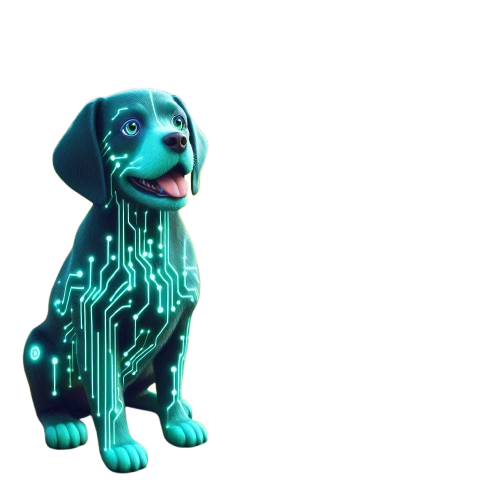

vRadar - Your On-Chain WatchDog
➠ Catch those shady moves early
➠ Ride with the big boys
➠ No more nasty surprises..
➠ Because opportunities are everywhere
Get Started➠ Catch those shady moves early
➠ Ride with the big boys
➠ No more nasty surprises..
➠ Because opportunities are everywhere
Get StartedvRadar puts you in the loop:
➠ See when devs move funds 👀 – Catch those shady moves early
➠ Track whale buys & sells 🐋 – Ride with the big boys
➠ Get anti-rug alerts 🚨 – No more nasty surprises..
➠ Multi-chain support 🌐 – Because opportunities are everywhere
Monitor developer wallet activities in real-time to detect suspicious transactions, large withdrawals, or unusual movements. Stay ahead of potential exit scams and maintain transparency in the projects you follow.
Keep an eye on significant market movements by tracking whale transactions. Identify large buys and sells that could impact token prices, helping you make informed trading decisions.
Receive instant alerts on potential rug pulls based on sudden liquidity withdrawals, contract changes, and suspicious developer actions. Protect your investments with automated risk detection.
Track transactions across multiple blockchain networks seamlessly. Whether it's Ethereum, BSC, Solana, or others, our platform ensures you stay updated on critical activities across chains.
🔹 Automatic developer wallet tracking
🔹 Real-time holder & transaction monitoring
🔹 Whale detection for large buys & sells 🐋
🔹 Anti-rug alerts when devs sell holdings ⚠️
🔹 vRadar goes live on Virtual Protocol
🔹 Adding support for BSC, Polygon, Arbitrum, Avalanche, Base, Core, and Sui
🔹 User-friendly chain selection for seamless tracking
🔹 Optimized performance & reduced RPC usage
🔹 Spam filter to avoid unnecessary alerts
🔹 Auto-reconnect feature to keep tracking active
🏦 Smarter tracking & deeper insights
🔹 Liquidity pool monitoring (add/remove liquidity)
🔹 Detect contract renouncements & ownership transfers
🔹 Monitor token supply changes (mint/burn events)
🔹 Historical transaction tracking for better analysis
📈 Visual analytics & data insights
🔹 Web dashboard for real-time tracking
🔹 Historical trade data & whale movement trends
🔹 Top holder tracking & transaction heatmaps
🔹 Automated tracking setup via Telegram commands
🔹 Multi-contract tracking in a single bot
🔹 Customizable whale alerts (set thresholds per token)
🔹 Rug-check scoring system to assess risk levels